Skatt er en grunnleggende del av alle virksomheters økonomi og regnskap. Det er en obligatorisk avgift som pålegges av staten for å finansiere offentlige tjenester og infrastruktur. For bedrifter innebærer skatteplanlegging og -håndtering komplekse regnskaps- og juridiske prosesser som påvirker både likviditet og lønnsomhet. Den praktiske rapporteringen av skatteinformasjon skjer gjennom skattemeldingen, som er det viktigste dokumentet for skatteoppgjøret.
For informasjon om toppskatt, se Toppskatt.
For en stegvis guide til beregning av skatt, se Skatteberegning.
Seksjon 1: Grunnleggende om Skatt i Bedriftsregnskap
Skatt i bedriftssammenheng omfatter flere typer avgifter som påvirker den regnskapsmessige behandlingen og kontantstrømmen. Forståelse av skattemessige forhold er essensielt for korrekt regnskapsføring og økonomisk planlegging.
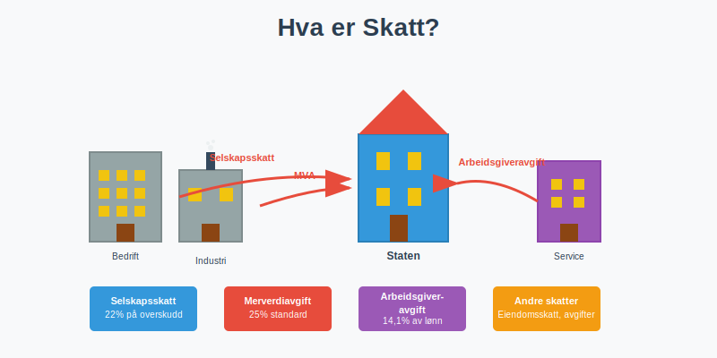
1.1 Bedriftsskatt vs. Personlig Skatt
Bedriftsskatt (se også Firmaskatt, også kalt selskapsskatt) er den direkte skatten som pålegges selskapers overskudd:
- Ordinær sats: 22% på skattepliktig inntekt (2024)
- Grunnlag: Regnskapsmessig resultat justert for skattemessige forskjeller
- Betalingsfrister: Forskuddsskatt og restskatt
Personlig skatt påvirker bedrifter gjennom:
- Forskuddstrekk for ansatte (administreres via skattetrekkskonto og beregnes med tabelltrekk)
- Skatt på feriepenger: Se Skatt på feriepenger for en detaljert guide til skattetrekk og behandling av feriepenger.
- Arbeidsgiveravgift
- Utbytte med skjermingsfradrag. For detaljer om aksjonærbeskatning se Aksjonærmodellen - Komplett Guide til Norsk Aksjebeskatning
- Skatt på uføretrygd for ansatte med gradert uføretrygd
1.2 Skatteplanlegging og Compliance
Effektiv skatteplanlegging innebærer:
| Område | Hovedfokus | Regnskapsmessig behandling |
|---|---|---|
| Timing | Inntekts- og kostnadsføring | Periodisering vs. kontantprinsipp |
| Avskrivninger | Skattemessige vs. regnskapsmessige | Forskjeller skaper utsatt skatt |
| Organisasjonsform | AS, ANS, ENK | Ulike skatteregler og rapportering |
| FoU og innovasjon | Støtte til FoU-prosjekter gjennom Skattefunn | Skattefunn |
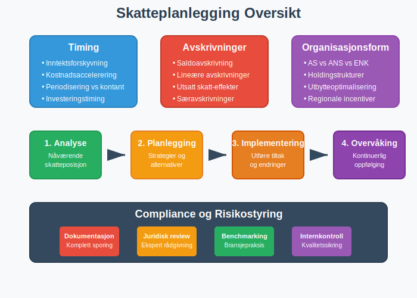
Seksjon 2: Typer Skatter for Bedrifter
2.1 Direkte Skatter
Selskapsskatt er den viktigste direkte skatten:
Beregningsgrunnlag:
- Regnskapsmessig resultat før skatt
- Tillegg: Ikke-fradragsberettigede kostnader
- Fradrag: Skattekreditter og særfradrag
- Skattemessig resultat × 22% = Betalbar skatt
Eksempel beregning:
Regnskapsmessig resultat før skatt: 1.000.000 kr
+ Ikke-fradragsberettiget representasjon: 50.000 kr
+ Bøter og overtredelsesgebyr: 20.000 kr
- Forskjell avskrivninger (skattemessig høyere): 100.000 kr
= Skattepliktig inntekt: 970.000 kr
× 22% = Betalbar skatt: 213.400 kr
For en detaljert gjennomgang av beregning og regnskapsføring av betalbar skatt, se Betalbar skatt.
2.2 Indirekte Skatter
Merverdiavgift (MVA) påvirker alle kommersielle transaksjoner:
Standard MVA-satser (Norge 2024):
| Kategori | Sats | Eksempler |
|---|---|---|
| Generell sats | 25% | Varer og tjenester |
| Redusert sats | 15% | Matvarer, transport |
| Lav sats | 12% | Serveringstjenester |
| Fritatt | 0% | Finansielle tjenester, helsetjenester |
MVA i regnskap:
- Inngående MVA: Fordring på staten
- Utgående MVA: Gjeld til staten
- Oppgjør: Måntlig eller periode-basert
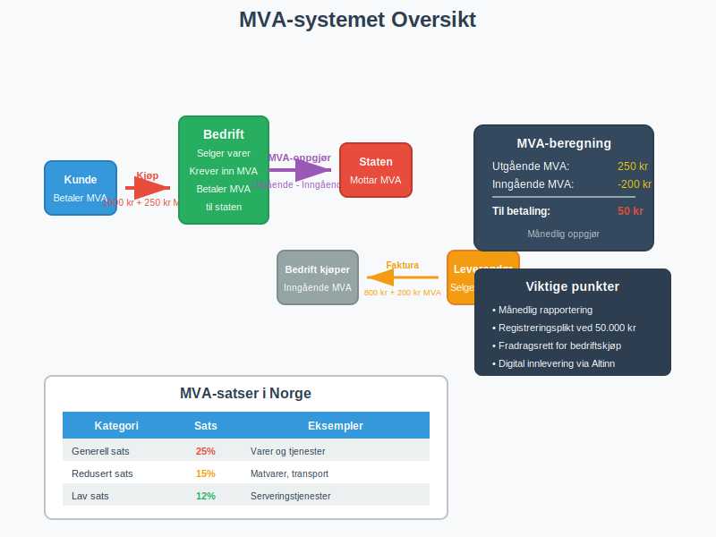
2.3 Arbeidsgiveravgift
Arbeidsgiveravgift beregnes av total lønnskostnad:
Satser etter geografisk sone:
| Sone | Sats | Geografisk område |
|---|---|---|
| Sone I | 14,1% | Øst-Norge, stavanger |
| Sone II | 10,6% | Midt-Norge |
| Sone III | 6,4% | Nord-Norge, enkelte kommuner |
| Sone IV | 5,1% | Utvalgte distrikter |
| Sone V | 0% | Svalbard, visse områder |
Regnskapsføring:
Debet: Lønnskostnad (arbeidsgiveravgift)
Kredit: Skyldig offentlige avgifter
Viktig: Arbeidsgiveravgift betales ikke av uføretrygd fra NAV, kun av lønn fra arbeidsgiver ved gradert uføretrygd. Det samme gjelder sykepenger som refunderes av NAV.
Seksjon 3: Regnskapsmessig Behandling av Skatt
3.1 Periodisk Skatteberegning
Månedsoppgjør for MVA og arbeidsgiveravgift:
- Bokføring av transaksjoner med MVA-komponenter
- Avstemming av MVA-kontoer
- Beregning av netto oppgjør
- Innlevering av oppgave til Altinn
- Betaling innen fristen
3.2 Årlig Skatteoppgjør
Selvangivelse krever sammenstilling av:
- Resultatregnskap data
- Balanseposter som påvirker skatt
- Skattemeldingsbilag med spesifikke justeringer
Viktige frister:
| Oppgave | Frist | Konsekvens ved forsinkelse |
|---|---|---|
| Selvangivelse | 31. mai | Forsinkelsesgebyr |
| Årsregnskap | 30. juni | Tvangsmulkt |
| Revisjonsberetning | 30. juni | Aksjelovbrudd |
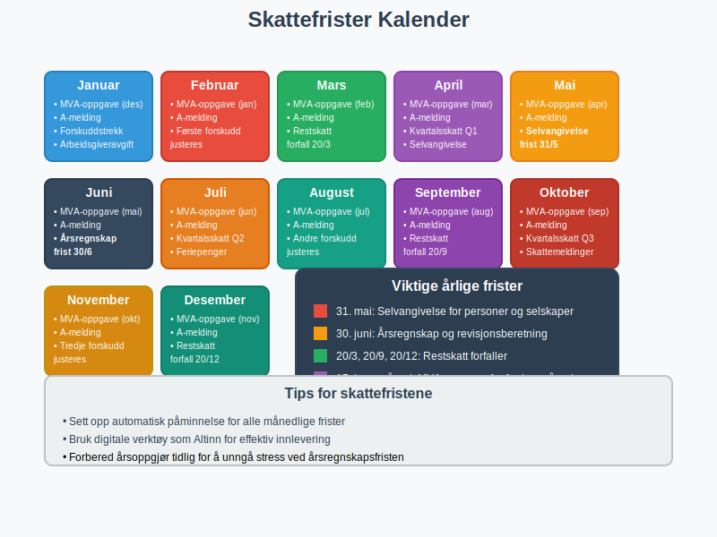
3.3 Utsatt Skatt
Utsatt skatt oppstår når det er midlertidige forskjeller mellom regnskapsmessige og skattemessige verdier:
Typiske eksempler:
- Avskrivninger: Skattemessige saldoavskrivninger vs. lineære avskrivninger
- Kundefordringer: Regnskapsmessige vs. skattemessige nedskrivninger
- Pensjonskostnader: Forskjeller i periodisering
Beregning utsatt skatt:
Midlertidig forskjell × Skattesats = Utsatt skattefordel/-forpliktelse
Eksempel:
Regnskapsmessig avskrivning: 100.000 kr/år
Skattemessig avskrivning: 200.000 kr/år
Årlig forskjell: 100.000 kr
Utsatt skatteforpliktelse: 100.000 × 22% = 22.000 kr
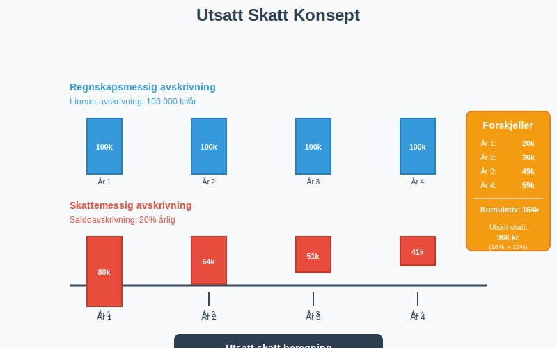
Seksjon 4: MVA-systemet i Detalj
4.1 MVA-registrering og Plikter
Registreringsplikt utløses når:
- Omsetning overskrider 50.000 kr på 12 måneder
- Forventet omsetning vil overstige grensen
- Frivillig registrering for lavere omsetning
4.2 MVA-beregning og Fradragsrett
Utgående MVA beregnes på:
- Salg av varer og tjenester
- Vederlagsfri overdragelse (gaver over 1.000 kr)
- Uttak til privat bruk
Inngående MVA kan trekkes fra når:
- Kostnaden er direkte relatert til virksomheten
- Dokumentasjon (faktura) foreligger
- Leverandør er MVA-registrert
MVA-fradragsrett oversikt:
| Kostnadskategori | Fradragsrett | Særlige bestemmelser |
|---|---|---|
| Kontorrekvisita | 100% | Standard forretningsbruk |
| Representasjon | 0% | Ikke fradragsberettiget |
| Firmabil | Delvis | Avhenger av privat bruk |
| Hotell/overnatting | 100% | Forretningsreiser |
4.3 Kompensasjonsordningen
Ideelle organisasjoner og offentlige virksomheter kan få MVA-kompensasjon:
- Sats: Tilsvarer standard MVA-sats
- Vilkår: Ikke-kommersielle aktiviteter
- Rapportering: Årlig kompensasjonsoppgave
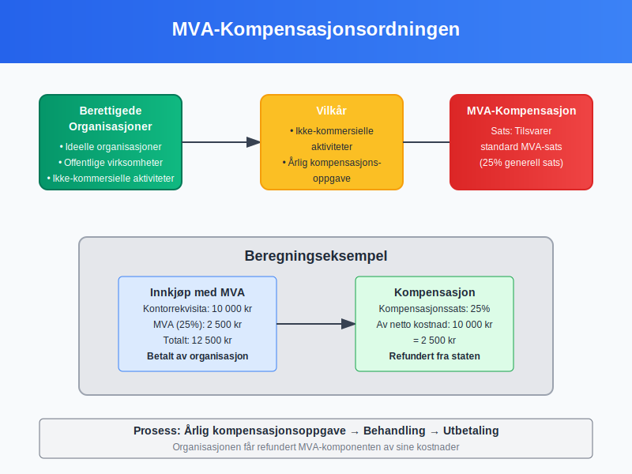
Seksjon 5: Internasjonale Skatteforhold
5.1 Skatteavtaler og Double Taxation
Skatteavtaler forhindrer dobbeltbeskatning:
Viktige prinsipper:
- Kildelandsprinsipp: Skatt betales der inntekten oppstår
- Bostedslandsprinsipp: Skatt betales der selskapet er hjemmehørende
- Credit-metoden: Fradrag for betalt skatt i utlandet
5.2 Transfer Pricing
Internprising mellom nærstående selskaper må følge armlengdeprinsippet:
- Dokumentasjonsplikt for transaksjoner over visse beløpsgrenser
- Sammenlignbare transaksjoner med uavhengige parter
- Justering hvis prising avviker fra markedspris
Transfer pricing metoder:
| Metode | Anvendelse | Fordeler |
|---|---|---|
| CUP (Comparable Uncontrolled Price) | Identiske produkter | Mest direkte |
| Cost Plus | Produksjon/service | Enkel implementering |
| Resale Price | Distribusjon | Markedsbasert |
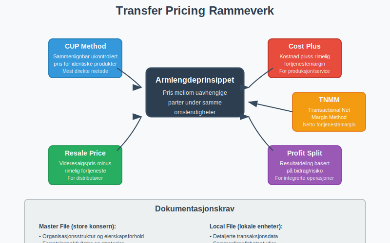
5.3 BEPS-initiativer
Base Erosion and Profit Shifting (BEPS) påvirker norske selskaper:
Hovedtiltak:
- Country-by-Country Reporting for store konsern
- Minimum skattesats på 15% (Pilar 2)
- Digital skatt på teknologiselskaper
- Begrenset rentefradrag (EBITDA-regel)
Seksjon 6: Skatteoptimalisering og Strategier
6.1 Lovlig Skatteplanlegging
Proaktiv skatteplanlegging kan redusere skattebelastningen:
Timing-strategier:
- Forskyvning av inntekter til lavere skatteår
- Fremskynding av fradrag til høyere skatteår
- Investeringer i skattemessig gunstige eiendeler
- Sektorspesifikke ordninger som tømmerkonto for inntektsutjevning i skogbruk
Strukturelle tiltak:
- Valg av organisasjonsform (AS vs. ANS vs. ENK)
- Holdingselskap-strukturer for utbytteoptimalisering
- Geografisk plassering for utnyttelse av regionale incentiver
6.2 Investeringsincentiver
Skattemessige incentiver for å stimulere bestemte aktiviteter:
Forsknings- og utviklingsfradrag:
- SkatteFUNN: 20% fradrag for FoU-kostnader (SMB)
- 18% fradrag for store selskaper
- Maksimale beløp og kvalifikasjonskrav
Avskrivningsregler:
- Saldoavskrivning: Degressiv avskrivning på ulike satser
- Særavskrivning: 100% førsteårsavskrivning på visse eiendeler
- Miljøvennlige investeringer: Fordelaktige avskrivningsregler
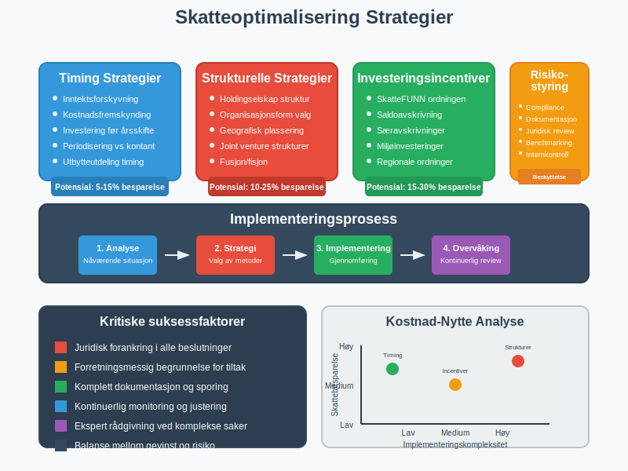
6.3 Risikostyring og Compliance
Skattemessig risikostyring innebærer:
Risikoområder:
- Aggressiv skatteplanlegging kan utløse skatteetaten kontroller
- Skatteflyktning: Flytting av skattemessig bosted for å redusere skattebyrden. Se Skatteflyktning.
- Manglende dokumentasjon kan føre til tilleggsskatt
- Feiltolkning av skatteregler kan få alvorlige konsekvenser
Compliance-rammeverk:
| Element | Formål | Implementering |
|---|---|---|
| Policies og prosedyrer | Ensartet behandling | Dokumenterte retningslinjer |
| Opplæring | Kompetansebygging | Regelmessige kurs |
| Internkontroll | Kvalitetssikring | Review og godkjenning |
| Ekstern rådgivning | Spesialkompetanse | Skatteadvokater/revisorer |
Seksjon 7: Digitalisering av Skattesystemet
7.1 Altinn og Digital Rapportering
Altinn-portalen er hovedkanalen for skattemessig rapportering:
Viktige systemer:
- MVA-rapportering: Månedlig/periodisk innlevering
- Årsoppgave for lønnsforhold (A-ordningen)
- Selvangivelse med vedlegg
- CRS-rapportering for internasjonale kontoforhold
7.2 SAF-T (Standard Audit File for Tax)
SAF-T er standardformat for digital overføring av regnskapsdata:
Hovedkomponenter:
- Kontoplanen med alle hovedbok-kontoer
- Alle bokførte transaksjoner for perioden
- Kundefordringer og leverandørgjeld
- Metadata om regnskapssystemet
Implementering:
<AuditFile>
<Header>
<AuditFileVersion>1.10</AuditFileVersion>
<CompanyID>123456789</CompanyID>
</Header>
<GeneralLedgerEntries>
<!-- Alle hovedbok-posteringer -->
</GeneralLedgerEntries>
</AuditFile>
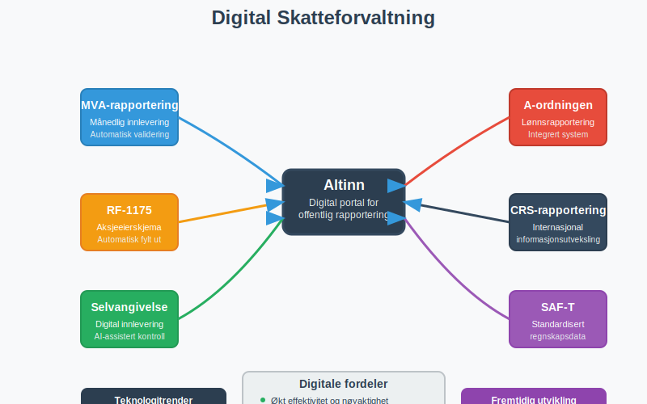
7.3 Kunstig Intelligens i Skattekontrollen
AI-verktøy brukes av skattemyndighetene for:
Risikoseleksjon:
- Maskinlæring for å identifisere avvik
- Bransjebenchmarking og outlier-deteksjon
- Kryssreferering av data fra ulike kilder
Automatiserte kontroller:
- Konsistenssjekk mellom ulike rapporter
- Pattern recognition for å oppdage skatteunndragelse
- Sanntidsovervåking av transaksjoner
Seksjon 8: Skattemessige Konsekvenser av Ulike Transaksjoner
8.1 Salg og Kjøp av Virksomhet
M&A-transaksjoner har komplekse skattemessige konsekvenser:
Eiendelskjøp vs. Aksjakjøp:
| Struktur | Kjøper-perspektiv | Selger-perspektiv |
|---|---|---|
| Eiendelskjøp | Trinnoppgang i avskrivningsgrunnlag | Beskatning av gevinst |
| Aksjakjøp | Ingen trinnoppgang | Fritaksmetoden kan gi skattefritak |
Due diligence fokusområder:
- Skattemessige posisjoner og tvister
- Utsatt skatt og fremførbare underskudd
- Transfer pricing dokumentasjon
- MVA-forhold og potensielle krav
8.2 Omstrukturering og Fusjon
Selskapsomdannelser kan gjennomføres skattefritt under visse vilkår:
Skattefrie fusjoner:
- Kontinuitetsvilkåret: Samme eiere før og etter
- Forretningsmessige begrunnelse: Ikke primært skattemotivert
- Dokumentasjonsvilkår: Korrekt skattemessig dokumentasjon
Fissjon og oppsplitting:
- Proporsjonalitetskrav: Eiere beholder forholdsmessige andeler
- Tidsbegrensning: Eiere må beholde aksjer i minimum 3 år
- Verdipapirfondsregler: Særlige regler for finansselskaper

8.3 Finansielle Instrumenter
Komplekse finansielle produkter krever spesiell skattemessig behandling:
Derivater og opsjoner:
- Realisasjonsprinsippet vs. mark-to-market
- Sikringsbokføring og skattemessig anerkjennelse
- Valutasikring og periodiseringsregler
Obligasjoner og rentebærende instrumenter:
- Periodisering av renter vs. kontantprinsipp
- Premie/diskonto avskrives over løpetiden
- Valutaobligasjoner og kursgevinster/-tap
Seksjon 9: Bransje- og Sektorspesifikke Skatteregler
9.1 Eiendomsbransjen
Eiendomsselskaper har særlige skatteregler:
RISK-reglene (Regler for Inntektsberegning i Selskap med Karakter av lukket kreds):
- 20% skattlegging av andeler i RISK-selskap
- Unntaksbestemmelser for profesjonelle eiendomsutviklere
- Dokumentasjonskrav for å unnslippes RISK-beskatning
Eiendomsskatt og kommunale avgifter:
- Eiendomsskatt: Kommunal skatt på fast eiendom
- Dokumentavgift: 2,5% på eiendomsoverdragelser
- MVA på nybygg: 25% MVA ved salg innen 10 år
9.2 Shipping og Rederinæringen
Norsk internasjonale skipsregister (NIS) gir skattefordeler:
Tonnasjeskatten:
- Skattefri drift av NIS-registrerte skip
- Tonnasje-basert skatt i stedet for overskuddsskatt
- Geografiske begrensninger for virksomheten
Sjøfolks særordninger:
- Sjøfolksfradrag: Spesielle fradrag for sjøfolk
- Skattefri hyre: For arbeid på kontinentalsokkelen
- Petroleumsskatten: 78% kombinert skatt på petroleum
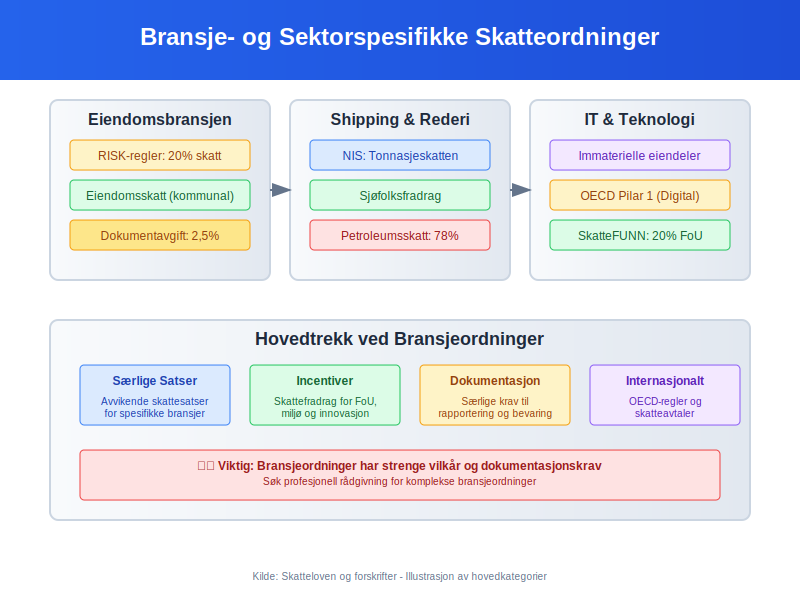
9.3 Teknologi og Software
IT-selskaper møter moderne skatteutfordringer:
Immaterielle eiendeler:
- Programvare-utvikling: Aktivering vs. kostnadføring
- Patenter og teknologi: Transfer pricing og verdsettelse
- Cloud-tjenester: Stedsbestemming og MVA-plikt
OECD Pilar 1 (Digital skatt):
- Minimum omsetning: USD 20 milliarder globalt
- Profitabilitet: Over 10% margin
- Omfordeling: 25% av overskudd over 10% til markedsland
Seksjon 10: Fremtidige Trender og Utvikling
10.1 Grønn Skattepolitikk
Bærekraftige skatteordninger blir stadig viktigere:
CO₂-avgifter og miljøskatter:
- Karbon-lekkasje beskyttelse for eksportindustri
- Grønne sertifikater og skattefradrag
- Plastikavgift og emballasjeavgifter
ESG-rapportering og skatt:
- CSRD-direktivet: Utvidet bærekraftsrapportering
- Taksonomi-forskriften: Klassifisering av bærekraftige aktiviteter
- Social and governance faktorer i skatteplanlegging
10.2 Blockchain og Kryptovaluta
Digitale valutaer skaper nye skatteutfordringer:
Kryptovaluta-beskatning:
- Gevinst/tap ved salg eller bytte
- Mining-aktivitet: Næringsinntekt eller hobby
- DeFi og staking: Kompleks inntektsklassifisering
NFT og digitale eiendeler:
- Intellectual property og royalty-beskatning
- Cross-border transaksjoner og jurisdiksjon
- Verdsettelse av unike digitale eiendeler
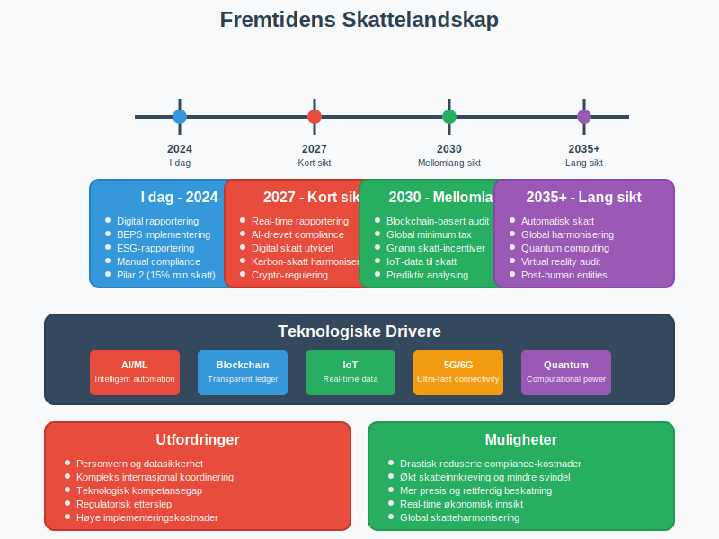
10.3 Real-time Rapportering
Kontinuerlig skatteovervåking blir den nye standarden:
Teknologiske drivere:
- API-basert datautveksling med myndighetene
- Blockchain for manipulasjonssikre skatteregistre
- AI og maskinlæring for automatisk compliance-sjekk
Implementeringsutfordringer:
- Systemintegrasjon mellom ERP-systemer og skattemyndigheter
- Personvern og databeskyttelse (GDPR)
- Kostnader ved system-oppgraderinger
Seksjon 11: Praktiske Verktøy og Ressurser
11.1 Skatteberegningsverktøy
Digitale hjelpemidler for skatteplanlegging:
Skattekalkulator-funksjoner:
| Verktøy | Hovedfunksjon | Målgruppe |
|---|---|---|
| SkatteFUNN-kalkulator | FoU-fradrag beregning | Innovasjonsbedrifter |
| MVA-kalkulator | Oppgjør og periodisering | Alle MVA-pliktige |
| Avskrivningskalkulator | Skattemessige avskrivninger | Eiendelssintensive bedrifter |
| Lønnskalkulator | Arbeidsgiveravgift og forskuddstrekk | Alle arbeidsgivere |
11.2 Compliance-sjekklister
Månedlige oppgaver:
- MVA-oppgave innlevert til Altinn
- Arbeidsgiveravgift beregnet og betalt
- Forskuddstrekk innbetalt
- A-melding sendt for lønnsdata
Kvartalsvise oppgaver:
- Kvartalsrapport med skatteinformasjon
- Forskuddsskatt vurdert og justert
- Transfer pricing dokumentasjon oppdatert
Årlige oppgaver:
- Skattemelding med vedlegg innlevert
- Årsregnskap og revisjonsberetning
- SAF-T fil forberedt for potensielle kontroller
- Skatteposisjoner vurdert for balansen
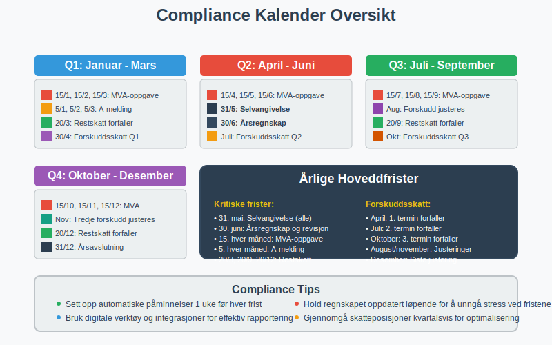
11.3 Skatterevisjons-forberedelse
Proaktiv tilnærming til skattemyndighetenes kontroller:
Dokumentasjonsmapper:
- Kontraktsportefølje: Alle kommersielle avtaler
- Transfer pricing: Sammenlignelighetsstudier og benchmarks
- Organisasjonsstruktur: Eierskap og kontrollforhold
- Skattemessige posisjoner: Begrunnelser for tolkninger
Digital arkivering:
- Strukturerte filnavn for enkel søking
- Metadata-tagging av dokumenter
- Backup og tilgjengelighetssikring
- Tilgangskontroll og sporbarhet
Konklusjon
Skatt er en kompleks og allsidig komponent i bedrifters økonomi som krever både juridisk presisjon og strategisk tenkning. Fra grunnleggende MVA-håndtering til avanserte internasjonale skatteplanleggingsstrategier, påvirker skattemessige forhold alle aspekter av regnskapsføringen og den finansielle planleggingen.
Nøkkelinnsikter:
- Compliance først: Korrekt overholdelse av skattelovgivningen er grunnleggende
- Proaktiv planlegging: Skatteoptimalisering krever langsiktig strategisk tenkning
- Teknologisk tilpasning: Digitalisering endrer hvordan skatt rapporteres og kontrolleres
- Internasjonalt fokus: Globalisering krever forståelse av grenseoverskridende skatteregler
Praktisk anvendelse:
For regnskapsførere, økonomi-ansvarlige og bedriftsledere er forståelse av skattesystemet essensielt for:
- Akkurat bokføring og rapportering
- Effektiv kontantstrømstyring gjennom skatteoptimalisering
- Risikominimering gjennom korrekt compliance
- Strategisk beslutningstagning ved investeringer og omstruktureringer
Fremtidsperspektiv:
Skattelandskapet utvikler seg raskt med digitalisering, bærekraftsfokus og internasjonale harmoniseringsinitiativer som BEPS. Bedrifter som investerer i moderne skatteforvaltningssystemer og bygger robust kompetanse innen skatteplanlegging, vil være best posisjonert for fremtidige utfordringer og muligheter.
Skattemessig etterlevelse er ikke bare en plikt - det er en strategisk mulighet for verdiskapning gjennom optimalisert kapitalallokering og reduserte kostnader. Ved å integrere skattemessige betraktninger i alle forretningsmessige beslutninger kan bedrifter oppnå både regelverksetterlevelse og konkurransefortrinn i markedet.
Betalbar skatt
For detaljer om betalbar skatt og dens beregning, se Betalbar skatt. Skatteetaten er ansvarlig for alle disse prosessene og tilbyr veiledning, digitale tjenester og kontrollrutiner. Se også Skatteetaten for en oversikt over skattemyndighetens roller og tjenester.